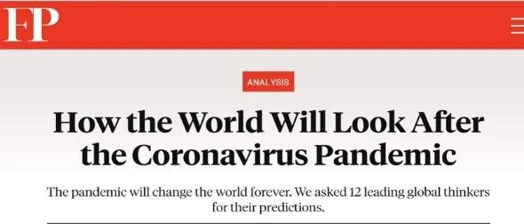
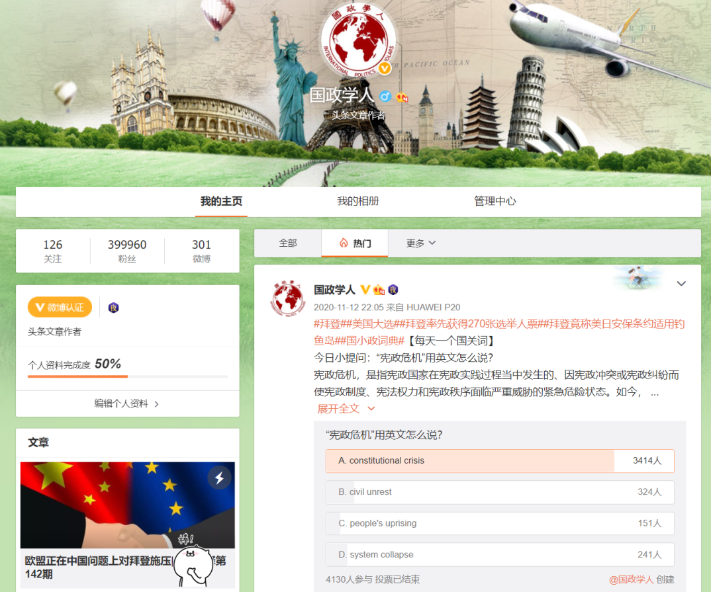
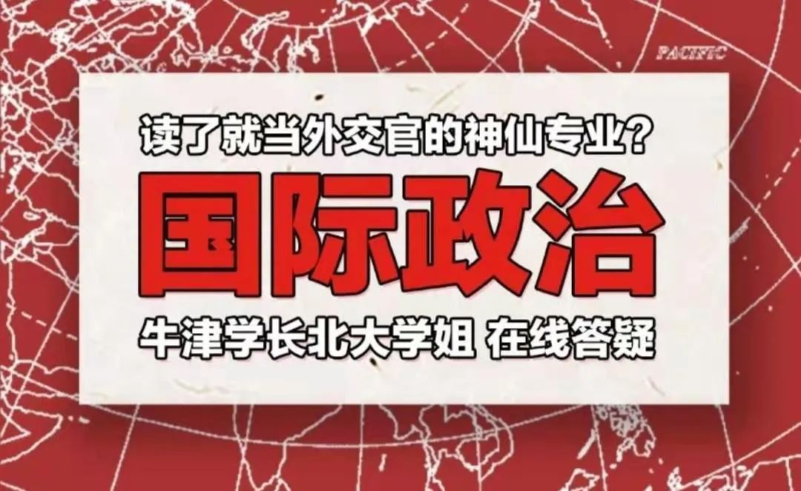
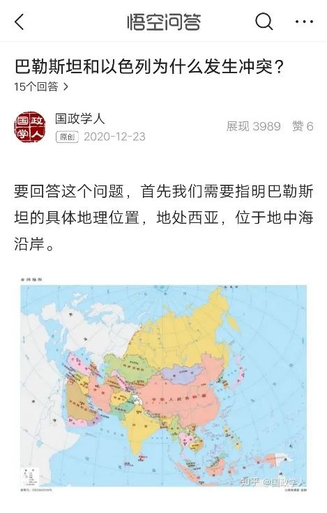
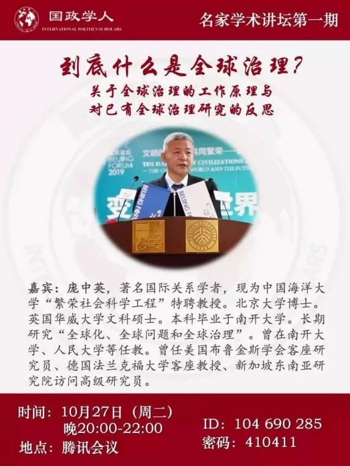
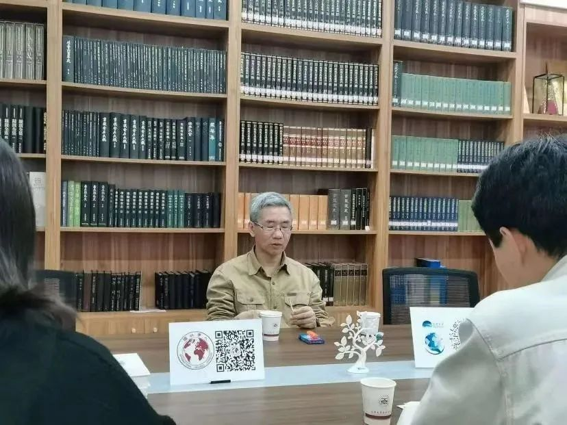
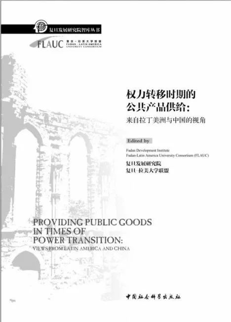

收录于合集 #年度精选 4个
国政学人是中国国际关系与政治学学界知名学术平台，专注相关领域的知识传播与学术研究事业。国政学人团队汇集了上百位来自海内外名校的青年学人。读者定位高水平研究者，影响受众已覆盖国内相关领域所有科研院所，并向国际拓展。目前，国政学人以高质量外文编译为特色，并成长为中国国际关系学界规模与影响力最大的编译平台。
承蒙欧亚系统科学研究会与社会各界前辈的支持，过去的一年是国政学人发展史上最为重要的一年。这一年，国政学人形成了集网站、微信公众平台、微博、知乎、B站、头条为一体的新媒体运营矩阵，各平台账号关注量总计数十万关注者。我们先后与众多学术出版机构、媒体、智库开展了友好合作，得到秦亚青、唐世平、庞中英等知名学界前辈与众多青年学者的内容授权或学术支持，为广大读者与团队成员创造了更加广泛的知识信息、学习资源和成长机遇。
国政学人新媒体矩阵
（一）微信公众平台
2020年1月25日至2021年2月11日，国政学人微信公众平台共推送了522篇文章， 累计了近180万次阅读次数 。这一年，突如其来的疫情给大家的生活蒙上一层灰色，但疫情中的国小政却更具温度。我们关注世界大势的波诡云谲，《约瑟夫·奈等预测：新冠疫情之后，世界将何去何从？》成了 国小政的首篇10万+ ；我们利用在线平台，邀请多名老师，为国关学子组织了一场场知识盛宴；我们聚焦疫情下的你我他，推出【留学纪实】系列栏目；我们陪大家一起吃美国大选的瓜，也在为读者提供理性与专业的分析视角。

首篇十万+
留学纪实
（二）微博平台
2020年，“国政学人”微博平台共发布298条微博，获得1.9万个转评赞，总阅读量突破1676.4万次， 粉丝即将达到40万 。2020年7月22日，广受欢迎的“国小政词典”系列正式推出，国政学人用每天一个国关词的趣味形式，带给喜爱国际关系的粉丝们更多知识。

“国政学人”微博
偶尔皮一下的国小政
福利活动
当然还有收获好评和被大V们转载！！！
（三）B站视频平台
2020年7月，国政学人B站账号正式上线。迄今为止，国政学人在B站共上传了4期视频并进行了一次直播。国小政B站分政主打以轻松、有趣的方式科普国关国政专业知识，同时不定期邀请国关大佬空降B站为大家答疑解惑。
“国政学人”B站

首期视频：【国政学人】当外交官？没饭碗？业内超强学霸阵容在线解答：国政专业到底是个啥？众多国政学人内部成员出镜，为正在考虑如何选择未来专业的学子们答疑解惑。
【国政学人】都2020大选了，究竟是谁还
坚持为懂王贡献选票？
美国大选前夕，国政学人以编译文章为基础推出本期视频，从低信息量选民视角犀利解读
特朗普背后的坚定支持者。
【国政学人】猫猫视角下的国际政治会是
小鱼干大战吗？点击查看喵星人与政治的奇妙组合！
【国政学人】哈利波特中的同盟与战争丨伏地魔：年轻人，我劝你们耗子尾汁！
（四）其他平台
2020年，国政学人还开通了头条号（国政学人）和Facebook脸书专页（@ China Thinkers），让海内外受众更加充分及时地了解中国国际关系学界动态。

头条号问答社区
脸书号“每日一词”
二、国政学人鼠年大事记
2020年2月
➢国政学人学术沙龙内部试水
2020年3月
➢3月13日，【美国大选】拜登：为什么美国必须再次领导世界—拯救特朗普之后的美国外交政策
➢3月26日，国政学人首篇10万+，【重磅】约瑟夫·奈等预测：新冠疫情之后，世界将何去何从？
2020年5月
➢5月25日，国政学人青年讲坛上线
2020年7月
➢7月4日，国政学人夏季招募启动，收到近百名名校学子简历
➢7月22日，国小政词典上线
➢7月23日，双许对话系列开启
➢7月30日，国政学人B站账号开通并发布首期视频
2020年10月
➢10月22日，国政学人名家讲坛上线，首期嘉宾为庞中英老师
➢10月29日，“猫猫与国际关系”系列获得中国社会科学出版社青睐，收到著作出版邀请

2020年11月
➢11月4日起，推出美国大选系列编译
➢11月12日，名家访谈系列（包括名家专访，学者巅峰对华等栏目）上线，首期对话 唐世平 教授
推文指路：
➢【巅峰访谈】唐世平教授专访秦亚青教授：从“实证主义者”到“建构主义者”
➢11月12日，国政学人微博获转评赞4512次
➢11月13日，国政学人与 上海人民出版社东方编译所 合作推荐国关书籍
➢11月底，国政学人朋辈学术沙龙正式开启

平台成员正在采访唐世平教授

学术沙龙
2020年12月
➢ 国政学人与 中国社会科学出版社 开启书籍推广合作，为国政学人系列赠书活动提供给力支持
➢12月4日，推出ISA主席特辑栏目
➢12月底，国小政周边初具雏形
➢12月底，国政学人微博粉丝突破30万

2021年1月
➢《国际关系前沿》电子学习资料上线
➢ 国政学人学术带头人制度开始筹备
➢ 国政学人团队与中国社会科学出版社合作参与国关著作翻译项目

↑ 国政学人、中国社会科学出版社与复旦大学发展研究院三方合作筹划参与的翻译项目
国政学人致力于学术公益事业，我们将自身定义为中外学术交流的小小桥梁，我们想把西方学界最经典的或是最新的观点译介到中国，也希望将中国的声音传递给世界。希望新一年里各位读者也能继续关注与支持“国政学人”，祝大家新年快乐！
文案&资料整理：刘瑛琛、国政学人宣传部
排版：卢奕财
美编：李九阳

好好学习，天天“在看”
国政学人
支持学术公益与知识传播
微信扫一扫赞赏作者 __赞赏
已喜欢，对作者说句悄悄话
取消 __
发送给作者
发送
最多40字，当前共字
上一页 1/3 下一页
长按二维码向我转账
支持学术公益与知识传播
受苹果公司新规定影响，微信 iOS 版的赞赏功能被关闭，可通过二维码转账支持公众号。